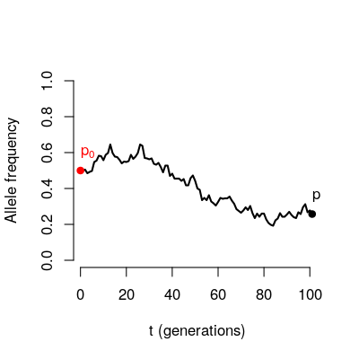
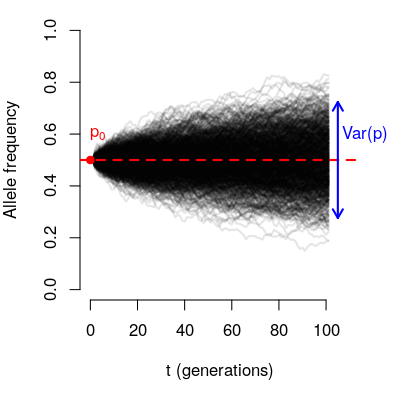
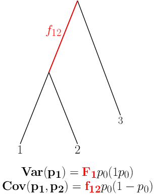
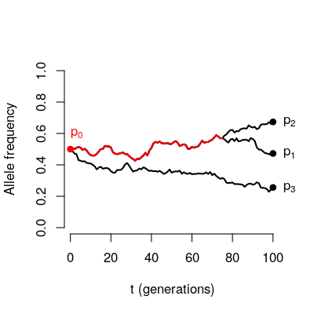
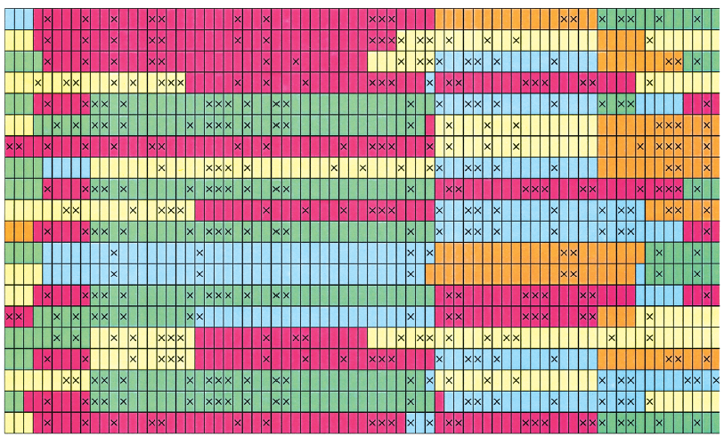
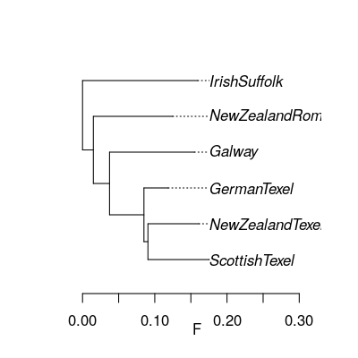
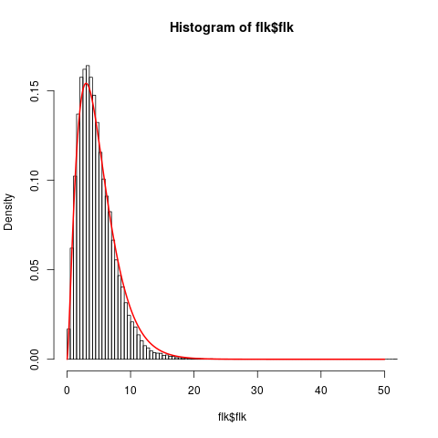
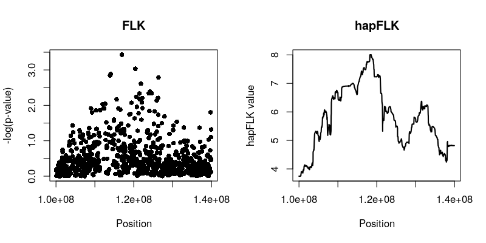
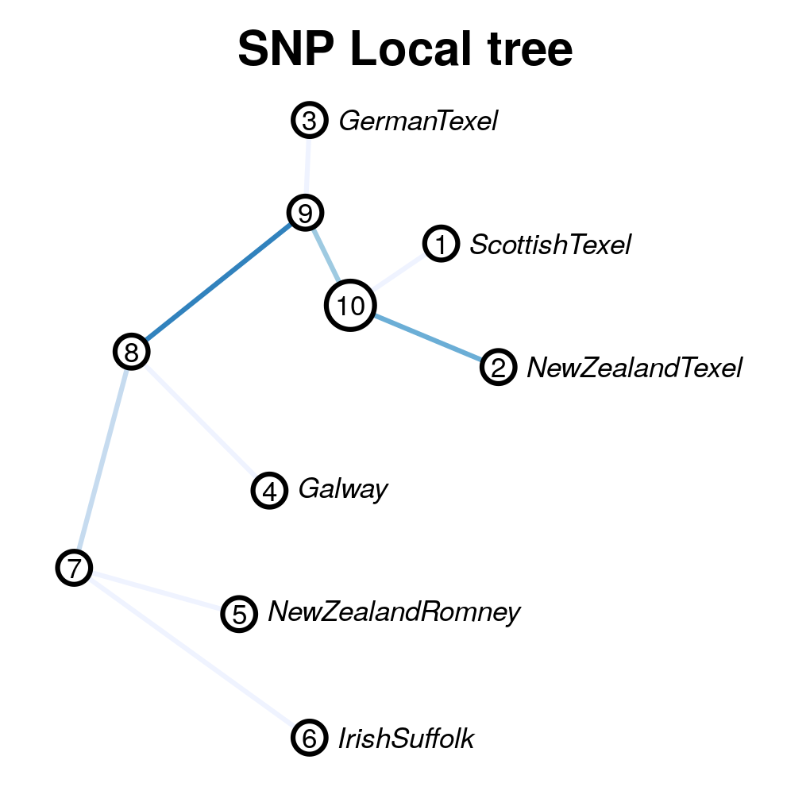

hapFLK: a gentle introduction
Bertrand Servin
bertrand.servin@inra.fr
SSMPG Sept. 11-15 2017, Aussois, France
Resources
Principle of the (hap)FLK tests
- FLK and hapFLK are tests aimed at detecting selection based on population differentiation
- The principle is:
- Model differences in allele frequencies betwen a group of populations evolving under drift.
- At a given locus: Are observed differences with this model ? = test for selection at this locus.
- Single SNP test: FLK / LD-based test : hapFLK
Neutral model in a single population
Consider the trajectory of an allele through time in a population of finite size

If we were to look at many loci starting from the same initial frequency \(p_0\).

\[E(p) = p_0\]
The variance of the final frequencies depends on:
- The number of generations (t)
- The population size (N)
- The initial allele frequency (\(p_0\))
\[Var(p) \approx \frac{t}{2N} p_0(1-p_0)\]
Neutral model in multiple populations
If we had a set of loci with identical \(p_0\):
- we could estimate \(F \approx \frac{t}{2N}\) and
- characterize the distribution of allele frequencies under Neutral evolution.
Considering the same locus in a set of populations achieves this.

\(F\) characterizes the amount of drift since ancestral split: shared across (neutral) loci: estimated by considering all loci.
A more general scenario
- Populations have different sizes
- Successive splits: some populations share ancestry after the ancestral population.


Exploiting Linkage Disequilibrium: hapFLK

- hapFLK uses the Scheet and Stephens LD model .
- Models local similarity between haplotypes via reduction of dimension: local haplotype clusters
- Definition of clusters change along the chromosome: accounts for the effects of recombination
the hapFLK test
- Principle:
- Consider clusters as alleles
- Estimate haplotype cluster frequencies
- Test if differences in allele frequencies fit a neutral model.
- Advantages of using this LD model:
- No need for sliding windows
- Can be estimated on unphased genotype data
- Admits missing data
- The null distribution of hapFLK is not known but can be approximated from the data
Software overview
hapflkis a python program that is meant to be used on the command line.- Input files should be in
plinkformat. Preferably binary{bed,bim,fam}files. - First column (FID column) must indicate the population of origin of an individual
Practical
For this practical we will analyse data from The SheepHapMap project. First download the data:
mkdir -p practical/data/
## get input files into practical directory
wget -P practical/data http://genoweb.toulouse.inra.fr/~servin/data/NEU.fam
wget -P practical/data http://genoweb.toulouse.inra.fr/~servin/data/NEU.bim
wget -P practical/data http://genoweb.toulouse.inra.fr/~servin/data/NEU.bed
- These data consists in 7 populations from Northern Europe.
- One of them, the Soay, will be considered as an outgroup.
Estimating population history from SNP data calculating FLK
The first task will be aimed at running hapflk in SNP mode, to:
- calculate allele frequency
- estimate genetic distances between populations (Fsts)
- build a population tree
- Calculate FLK tests
This is done by running:
hapflk --bfile practical/data/NEU --outgroup=Soay -p practical/NEU
Which should take ~ 2 minutes.
This leads to the following output files:
ls practical/NEU*
practical/NEU_fij.txt practical/NEU.flk practical/NEU.frq practical/NEU_reynolds.txt practical/NEU_tree.txt
Let’s look at the population tree (NEU_tree.txt).
library(ape)
neu.t=read.tree('practical/NEU_tree.txt')
plot(neu.t,align=T)
axis(1,line=1.5)
title(xlab='F')
Notice that the outgroup (Soay) has been removed.

The kinship file contains the (co)variance matrix of allele frequencies estimated with all SNPs.
| ScottishTexel | 0.175 | 0.091 | 0.085 | 0.037 | 0.015 | 0 |
| NewZealandTexel | 0.091 | 0.161 | 0.085 | 0.037 | 0.015 | 0 |
| GermanTexel | 0.085 | 0.085 | 0.119 | 0.037 | 0.015 | 0 |
| Galway | 0.037 | 0.037 | 0.037 | 0.155 | 0.015 | 0 |
| NewZealandRomney | 0.015 | 0.015 | 0.015 | 0.015 | 0.125 | 0 |
| IrishSuffolk | 0 | 0 | 0 | 0 | 0 | 0.159 |
The NEU.flk file contains results of the FLK test.
We can check the fit of the model by verifying that the empirical distribution of FLK is close to a \(\chi^2(5)\)
flk=read.table('practical/NEU.flk',h=T)
hist(flk$flk,n=100,f=F)
xx=seq(0,50,0.01)
lines(xx,dchisq(xx,df=5),lwd=2,col=2)

Running hapFLK on a (bit of) chromosome
- hapFLK is a test based on LD patterns.
- LD patterns are relevant for linked markers
- So hapFLK needs to be calculated independently for each chromosome :)
- To reduce computation time, we will practice on a small, non random region of a chromosome
- We use plink to create our reduced dataset:
plink --sheep --bfile practical/data/NEU \
--chr 2 --from-kb 100000 --to-kb 140000\
--out practical/data/mstn --make-bed
Running the LD model
As for FLK, hapFLK must be calculated using a kinship matrix estimated genome-wide.
When using the LD model, the kinship must be provided.
hapFLK calculations are turned on by setting a number of haplotype
clusters using the -K flag.
hapflk --bfile practical/data/mstn \
--outgroup=Soay \
-p practical/mstn \
--annot \
--kinship practical/NEU_fij.txt \
-K 15 \
--nfit=2 \
--ncpu=2
- -K 15: the number of clusters to model LD. This depends on the
data. Can be estimated using
fastPHASEcross-validation proceudre. - –annot: turn on the production of output files to annotate the FLK and hapFLK signal. Use when looking at small genomic regions (some files can get big !).
- –nfit=2: this is only used here to reduce computation time. Don’t do this at home (keep the default unless you know what you are doing).
- –ncpu=2: use more if you can.
hapFLK output files
ls practical/mstn*
practical/mstn.eig practical/mstn.flk practical/mstn.flk.eig practical/mstn.frq practical/mstn.hapflk practical/mstn.hapflk.eig practical/mstn.kfrq.fit_0.bz2 practical/mstn.kfrq.fit_1.bz2 practical/mstn.png practical/mstn.rey
mstn.flkandmstn.frq: same as before. Sometimes useful (not here).mstn.hapflk: contains the hapFLK resultsmstn.kfrq.fit_{N}.bz2: frequency of haplotype clusters in populationsmstn.rey: estimates of local \(F_{_ST}\) between populationsmstn.*.eig: signal decomposition into principal components.
FLK and hapFLK
flk=read.table('practical/mstn.flk',h=T)
hflk=read.table('practical/mstn.hapflk',h=T)
par(mfrow=c(1,2))
plot(flk$pos,-log10(flk$pvalue), main='FLK',
xlab='Position', ylab='-log(p-value)', pch=16)
plot(hflk$pos,hflk$hapflk,main='hapFLK', type='l', lwd=2,
xlab='Position', ylab='hapFLK value')

NB: hapFLK results are not p-values. These can be computed after a
whole genome scan using the scaling_chi2_hapflk.py script available
on the hapFLK website.
Local cluster plots
The hapflk-clusterplot.R script produces local cluster plots.
## chmod +x hapflk-clusterplot.R
hapflk-clusterplot.R practical/mstn.kfrq.fit_0.bz2

Local population trees
Keep the tree structure but reesimates branch length. Use
local_reynolds.py and local_trees.R
## chmod +x local_reynolds.py
cd practical/
local_reynolds.py -p mstn
## produces two files
## hapflk_snp_reynolds.txt
## hapflk_hap_reynolds.txt
## EDIT the local_trees.R script (available on github)
cd ../../
R CMD BATCH local_trees.R
